Illustration
イラスト
イラスト、キャラクター、ロゴ、背景、
世界観を構成するグラフィックなど、
これまでに制作した作品を掲載しています。
一枚の絵として仕上げるだけでなく、
ゲームやWebサイト、創作の世界観など、
「どこで、どのように使うか」を考えながら制作しています。
イラスト
BUG
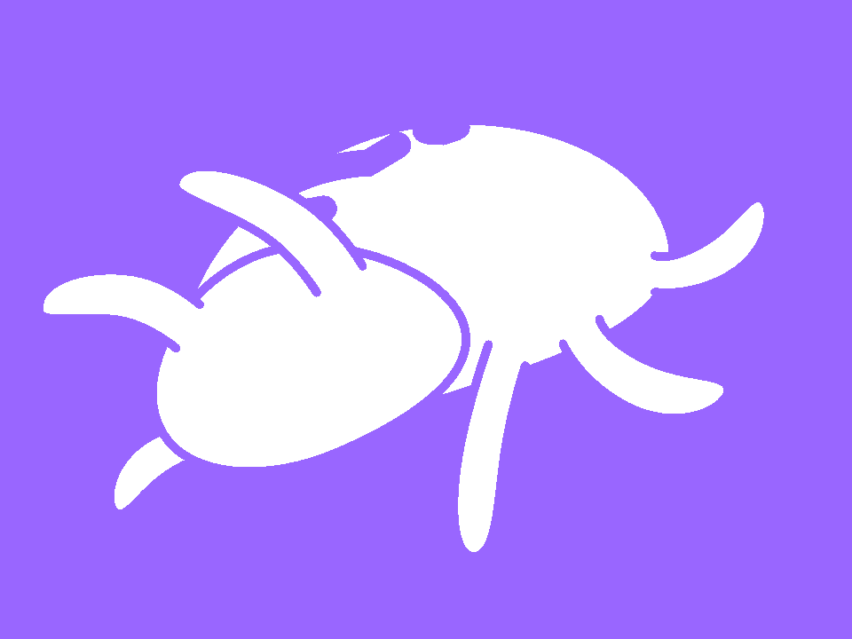
Scratchのデバッグ画面に登場する「バグ」をモチーフにしたイラストです。
元になったモチーフは平面的なデザインですが、
その形をそのまま描くのではなく、
「もしこのバグを立体的に描いたらどう見えるか」
という考えから制作しました。
身体のパーツ同士の重なりや輪郭の位置を調整し、
一つひとつの形が別々に見えるだけでなく、
全体として立体的に感じられるようにしています。
身近なScratchのモチーフを題材に、
ベクターエディターだけでどこまで表現を変えられるかを
試した作品です。
使用ツール
Scratch内蔵ベクターエディター
eternal Eden
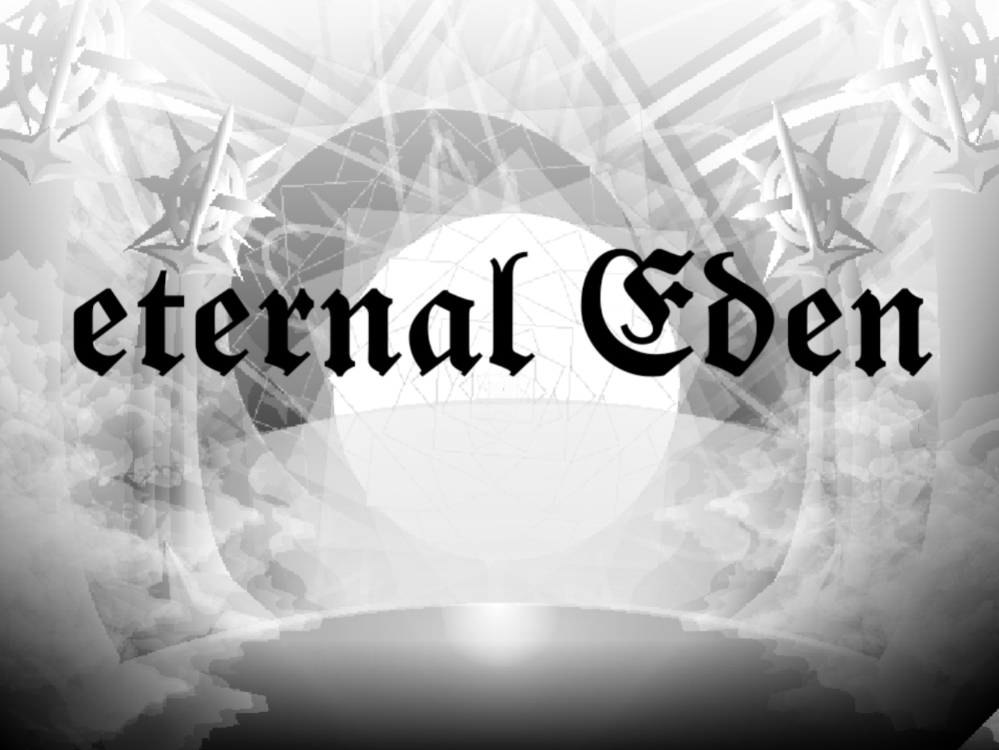
依頼を受けて制作したタイトルイラストです。
「かっこいい作品にしたい」という方向性をもとに、
キャラクターのシルエットを大きく見せ、
画面を見たときに人物へ視線が向かう構成にしました。
暗い背景に黒いキャラクターを置き、
白い文字装飾やオレンジ色のフレームを組み合わせることで、
色数を抑えながらも強い印象が残る画面を作っています。
キャラクターだけを描いて終わりにするのではなく、
タイトルや背景の装飾まで一枚の画面としてまとめることで、
作品そのものの雰囲気が伝わるタイトルイラストを目指しました。
制作目的
依頼作品・タイトルイラスト
使用ツール
Scratch内蔵ベクターエディター
ゲーム用背景
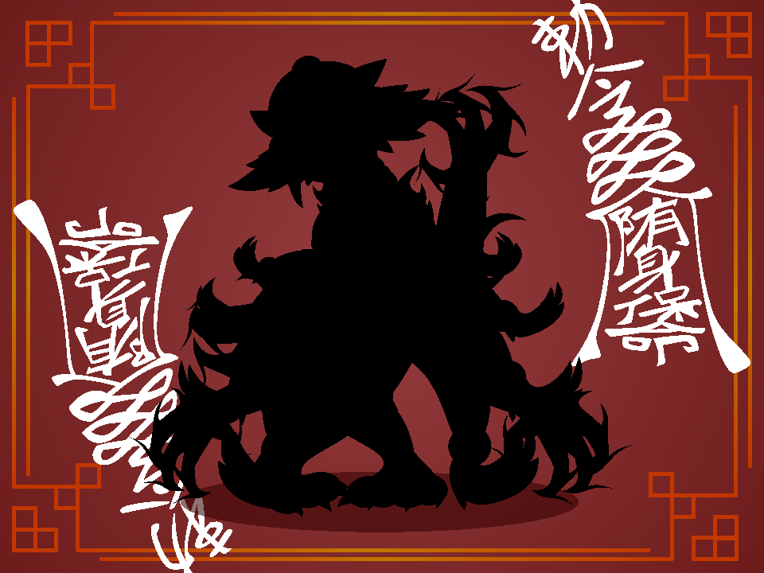
ゲームで使用することを想定して制作した背景イラストです。
背景として配置したときに、
キャラクターやゲーム画面上の情報を邪魔しないことを重視し、
大きな形と余白を使って画面を構成しています。
月や星などのモチーフを取り入れながら、
細かな描き込みを増やしすぎず、
全体を一つの雰囲気として見せるデザインにしました。
「背景そのものを見せる絵」ではなく、
その上に別の要素が配置されることを前提として制作した作品です。
制作目的
ゲーム用背景
使用ツール
Scratch内蔵ベクターエディター
夢
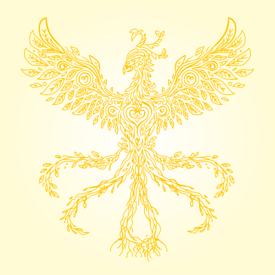
依頼を受けて制作したキャラクターイラストです。
依頼内容をもとにキャラクターを一つの作品として形にし、
シルエットや各パーツのまとまりを意識して制作しました。
キャラクター単体で見たときにも成立するよう、
全体の形を確認しながら細かな部分を調整しています。
Scratchのベクターエディターを使い、
曲線や図形を組み合わせて一つずつ形を作り、
キャラクターとして仕上げました。
制作目的
依頼作品・キャラクターイラスト
使用ツール
Scratch内蔵ベクターエディター
ロゴデザイン
エクリプスラボ ロゴ
.svg)
架空の研究機関「エクリプスラボ」のために制作したロゴです。
研究施設という設定に合わせ、
直線や幾何学的な形を中心に構成し、
無機質で整理された印象を持たせています。
中央にはバイオハザードマークを配置し、
その周囲を複数のラインで囲むことで、
危険な存在を扱う研究施設であることを
シンボルの中に組み込みました。
ロゴ単体でも組織の雰囲気が伝わるよう、
中央のマークと周囲の形状のバランスを調整しています。
創作の中ではWebサイトや資料などにも使用しており、
世界観を視覚的に統一するためのシンボルとして制作した作品です。
制作目的
創作内の架空研究機関のロゴ
使用ツール
Scratch内蔵ベクターエディター
SANO
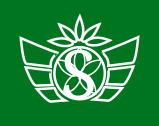
学校のロゴとして制作したデザインです。
学校を表すロゴとして、
複雑な絵ではなく一つのマークとして認識できる形を意識しました。
緑を基調とし、
中央のシンボルと「S」の文字を組み合わせています。
図形と文字を別々に置くのではなく、
一つのロゴとしてまとまって見えるように
大きさや配置を調整しました。
制作目的
学校用ロゴ
使用ツール
Scratch内蔵ベクターエディター
PHS
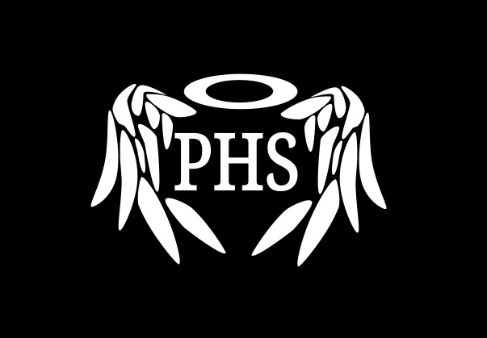
創作に登場する組織「PHS」のために制作したロゴです。
「PHS」という文字と抽象的なシンボルを組み合わせ、
組織名とマークの両方から認識できる形にしました。
黒と白を中心としたシンプルな配色にすることで、
色に頼らずシンボルそのものの形が印象に残るようにしています。
創作内で繰り返し使用することを考え、
イラストとは別に、
ロゴだけでも組織を表現できるデザインを目指しました。
制作目的
創作内の組織ロゴ
使用ツール
Scratch内蔵ベクターエディター
デイテッド
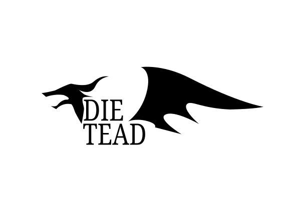
創作に登場する組織「デイテッド」のために制作したロゴです。
組織名だけでなく、
独自のシンボルを組み合わせることで、
名前を読まなくても視覚的に印象へ残ることを意識しました。
白地に黒いシンボルと文字を配置し、
シンボルの特徴的な形が目立つように
余白と文字の位置を調整しています。
創作内で使用する組織の「顔」として、
ロゴ単体でも成立することを意識して制作しました。
制作目的
創作内の組織ロゴ
使用ツール
Scratch内蔵ベクターエディター
オリジナルキャラクター
カネル・ヴァンパイア

Scratchのベクターエディターのみを使用して制作した
オリジナルキャラクター作品です。
この作品では、
ベクターエディターでどこまで陰影や立体感を表現できるかに挑戦しました。
黒・赤・紫を中心とした色を使い、
ヴァンパイアをモチーフとしたキャラクターの
妖しさや危険な雰囲気を表現しています。
髪や服には細かな陰影を重ね、
平面的になりすぎないように調整しました。
また、キャラクターだけで画面を完結させるのではなく、
背景にも月や城、翼を思わせる装飾を配置し、
一枚のイラストとして世界観を感じられる構成にしています。
使用ツール
Scratch内蔵ベクターエディター
視聴方法
TurboWarpを使用してWeb上で視聴できます。
BGM：夢想世界
龍

「自分の思う神」をテーマに制作したオリジナル作品です。
一般的な生き物としての龍ではなく、
人間から見て理解しきれない存在として表現するため、
モノクロを中心に画面全体を構成しました。
龍の周囲には装飾や模様を重ね、
一つのキャラクターというよりも
「何かを象徴する存在」として見えることを意識しています。
左右対称を基本とした構図の中に
一部異なる要素を入れることで、
完全に整っただけではない印象も持たせました。
龍そのものだけではなく、
背景の柱や文字、装飾まで含めて一つの作品として制作しています。
使用ツール
Scratch内蔵ベクターエディター
視聴方法
TurboWarpを使用してWeb上で視聴できます。
BGM：歓喜の歌
⚠ この作品は高品質なベクター素材を多数使用しているため、 読み込みに時間がかかる場合があります。
▶ 作品を再生龍・世界観イラスト
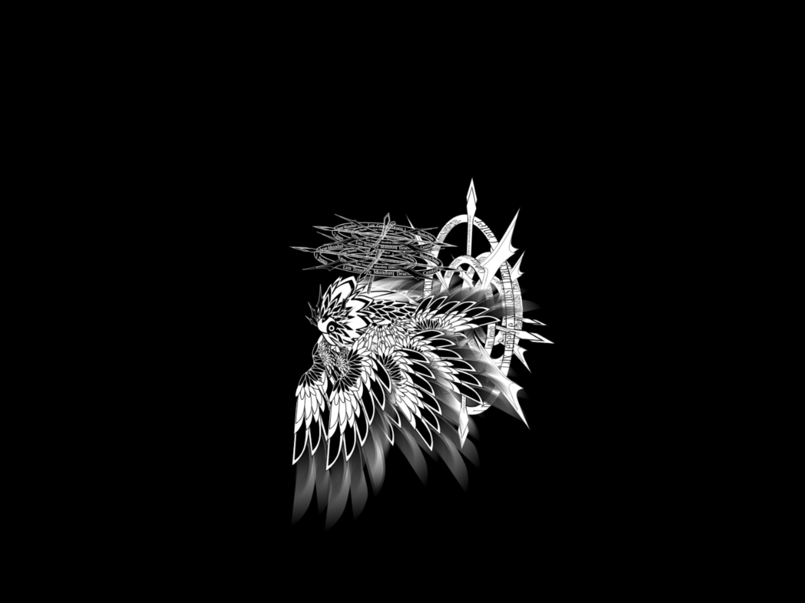
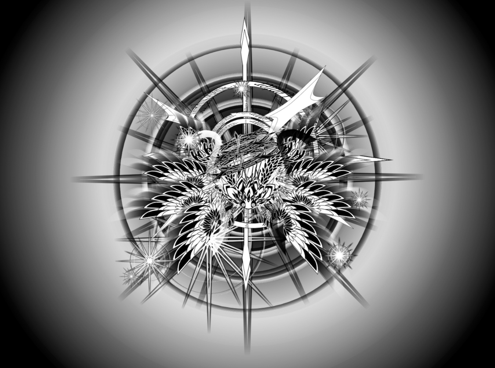
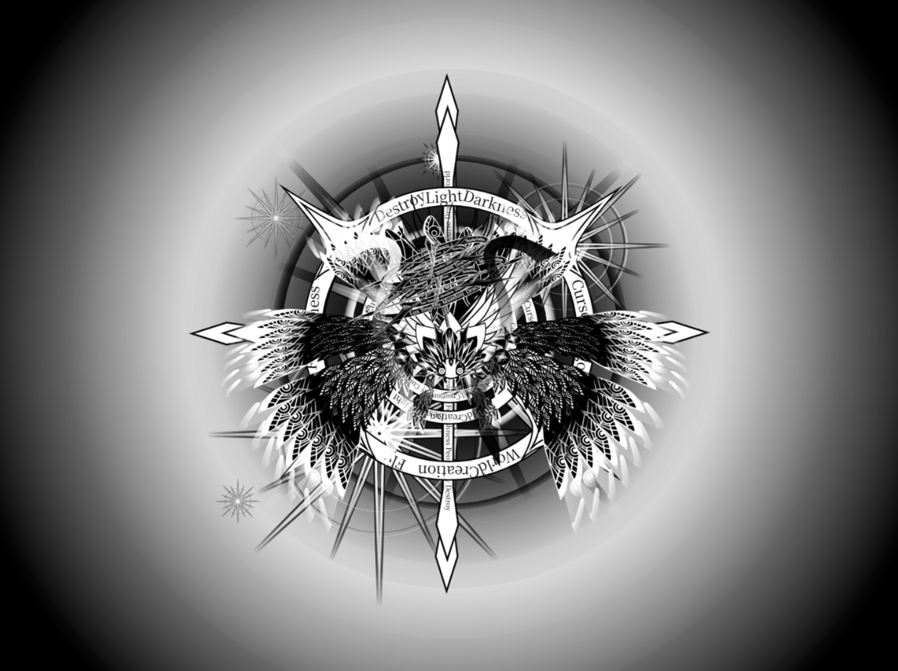
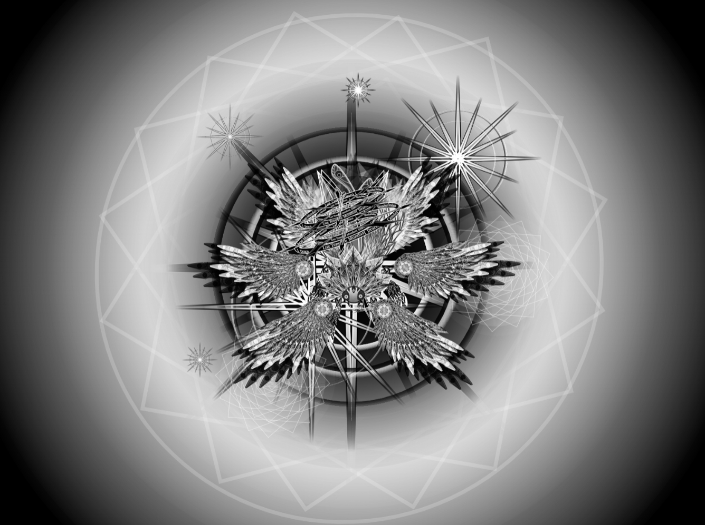
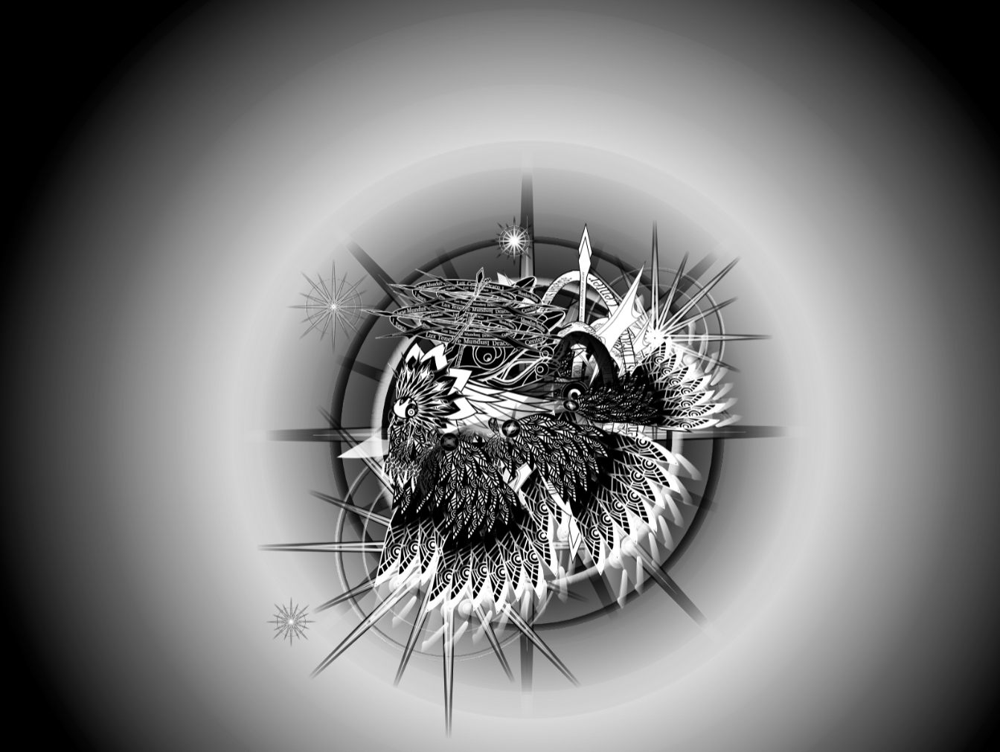
「龍」という一つのモチーフを、
これまで何度も描き直しながら制作してきた作品群です。
同じ「龍」を描いていても、
その時々で構図や装飾、表現方法を変え、
自分の中にある「龍」のイメージを少しずつ形にしてきました。
一枚の作品を完成させて終わりにするのではなく、
新しく描き直すたびに以前の作品とは違う表現を試し、
龍というモチーフそのものを掘り下げています。
翼や円形の図形、文字、光など、
その時々でさまざまな要素を組み合わせながら、
龍そのものだけでなく、
その周囲にある世界や雰囲気まで含めて表現しています。
何度も描き直してきたからこそ、
それぞれの作品にはその時期の自分なりの
「龍」の捉え方が表れており、
一連の作品を通して表現の変化を見ることができます。
制作目的
オリジナル世界観の制作・展開
使用ツール
Scratch内蔵ベクターエディター
ドラゴン
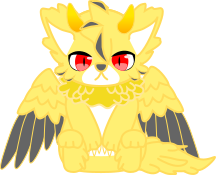
子供のドラゴンをモチーフに制作したオリジナルキャラクターです。
ドラゴンとして見たときに特徴が伝わることを重視し、
身体や翼などの各パーツを組み合わせながら
全体のシルエットを整えました。
細かな部分を描き込むだけではなく、
少し離れて見たときにも
キャラクター全体の形が分かることを意識しています。
Scratchのベクターエディターで
図形や曲線を組み合わせ、
パーツごとに調整しながら一つのキャラクターとして完成させました。
使用ツール
Scratch内蔵ベクターエディター
咲き誇る海月蝶
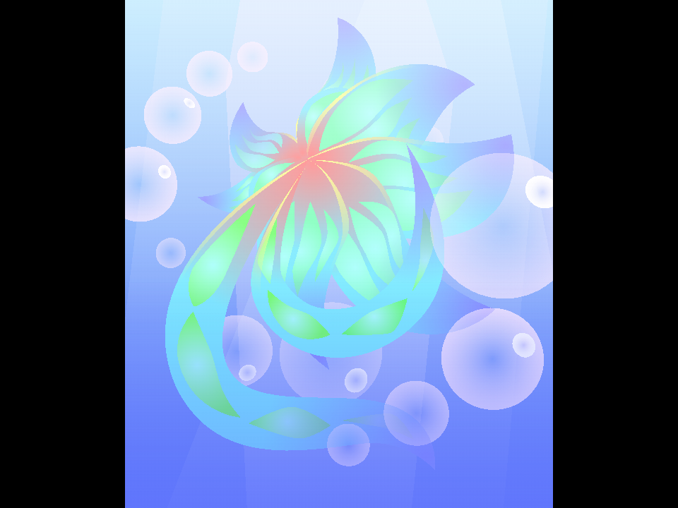
「咲き誇る海月蝶」をイメージして制作した
オリジナルキャラクターイラストです。
海月と蝶という二つのモチーフを組み合わせ、
そこへ「花が咲く」というイメージを加えてデザインしました。
水中を思わせる色の中に
緑・紫・ピンクなどの色を重ね、
透明感のあるパーツが重なって見えるようにしています。
中央から外側へ広がる形を意識し、
羽や触手を思わせるパーツを配置することで、
名前にある「咲き誇る」という印象につなげました。
生き物としての形だけでなく、
花のような美しさも感じられるキャラクターを目指した作品です。
使用ツール
Scratch内蔵ベクターエディター
コンセントのアイコン
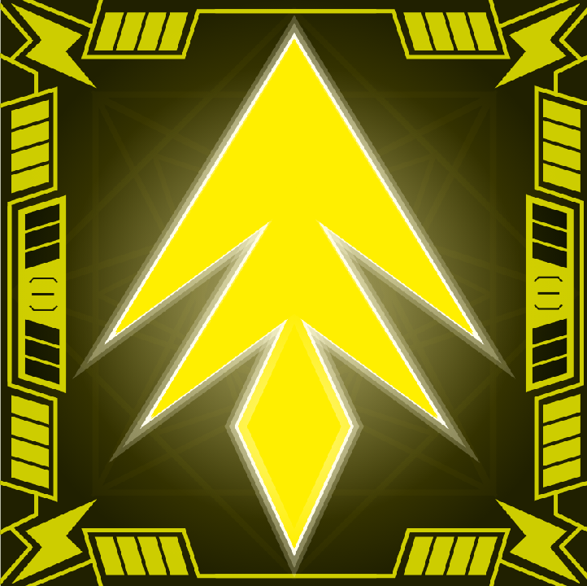
「コンセント」をモチーフに制作したアイコンです。
自分を表すシンボルとして使用することを想定し、
中央のモチーフを大きく配置して、
小さく表示した場合でも形が分かりやすい構成にしました。
周囲にも似たようなモチーフを取り入れ、
中央のシンボルを中心としたまとまりを作っています。
黄色を中心とした色と発光するような表現を組み合わせ、
アイコンとして目に入りやすいデザインに仕上げました。
使用ツール
Scratch内蔵ベクターエディター
ebihurai
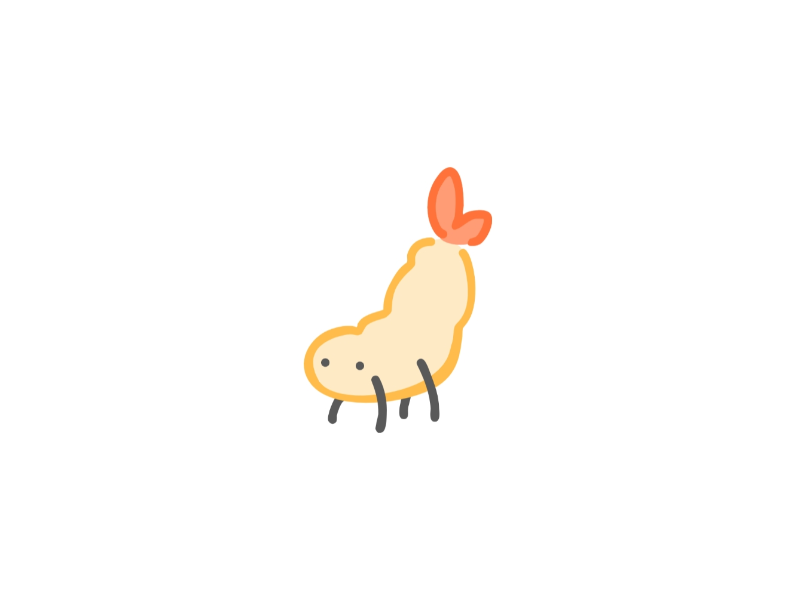
エビフライをかわいくデザインした
オリジナルキャラクターです。
食べ物としてのエビフライらしさを残しながら、
丸みのある形と小さな顔を組み合わせ、
キャラクターとして親しみやすくなるようにデザインしました。
要素を増やしすぎず、
シンプルな形でキャラクターとして成立させることを意識しています。
「食べ物をキャラクターにしたらどうなるか」
という発想から生まれた作品です。
使用ツール
Scratch内蔵ベクターエディター
キャラクター作品
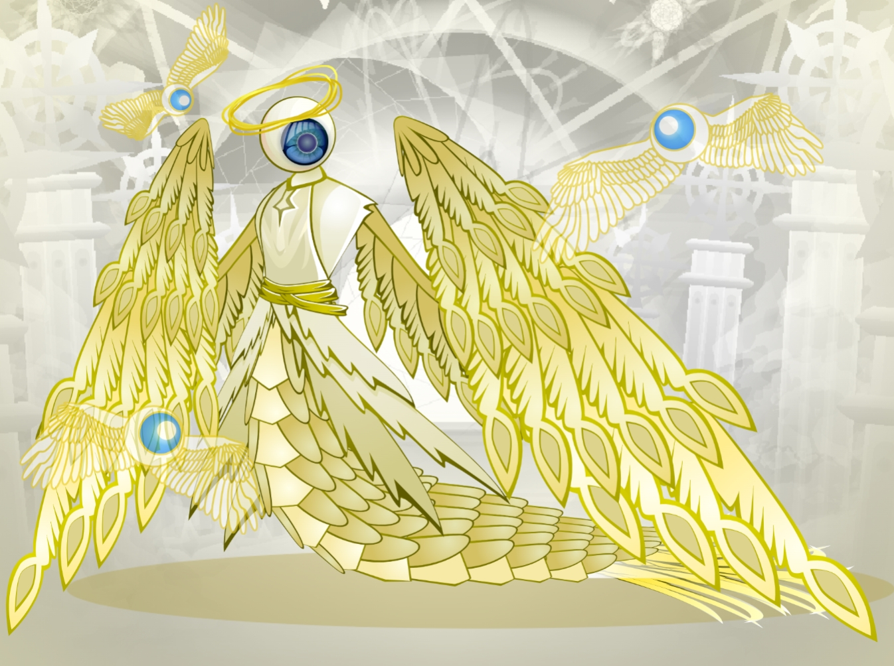
天使をモチーフに制作したキャラクターイラストです。
大きな翼や光輪、羽の装飾を組み合わせ、
神聖さや幻想的な印象を持つキャラクターとしてまとめました。
白と黄色を中心にした明るい配色の中へ
青い瞳を配置し、
キャラクターの顔へ視線が集まるようにしています。
大きなシルエットと細かな装飾を両方取り入れ、
全体の形と細部の描き込みを同時に楽しめる作品を目指しました。
使用ツール
Scratch内蔵ベクターエディター
世界観・コンセプトアート
MOONCORE
MOONCOREの世界観を象徴するロゴデザインです。
左右に広がる羽根は、
未来への発展や可能性を表現しています。
青を基調とすることで、
科学技術やAIが発展した未来という
MOONCOREの世界観に合わせました。
中央には円形のモチーフを配置し、
「MOON」の由来である月を表現しています。
シンプルな形状の中に世界観を象徴する要素をまとめ、
ロゴだけを見てもMOONCOREの世界を連想できることを意識しました。

.svg)
.svg)
.svg)
MOON COREは、 科学技術やAI、生体工学が発展した未来を舞台とする オリジナルSF世界観作品です。
コンセプト
MOONCOREは、
科学技術やAI、生体工学が極限まで発展した未来を舞台としたSF世界です。
未来技術そのものだけではなく、
進化病や変異体、アンドロイド、国家ごとの思想などを通して、
「人間とは何か」「意味とは何か」といった
答えのない問いを描くことをテーマとしています。
主なテーマ
- 意味とは何か
- 人間らしさとは何か
- 自由と管理
- 罪と償い
- 不完全であることの価値
イラスト
MOONCOREの世界を構成するために、
ロゴやイラスト、資料などを制作しています。
個々のイラストだけではなく、
複数のグラフィックを組み合わせることで、
一つの世界として感じられることを意識しています。
草原のおともだち
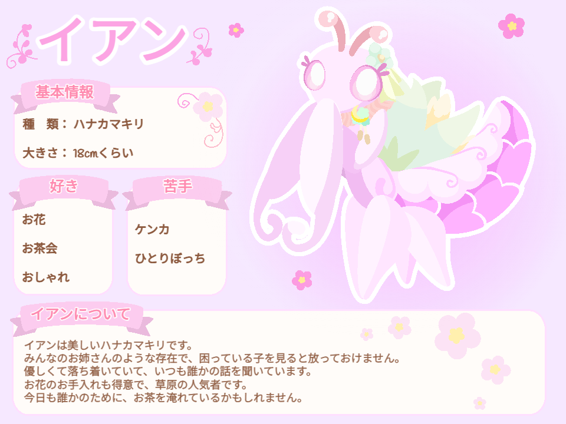
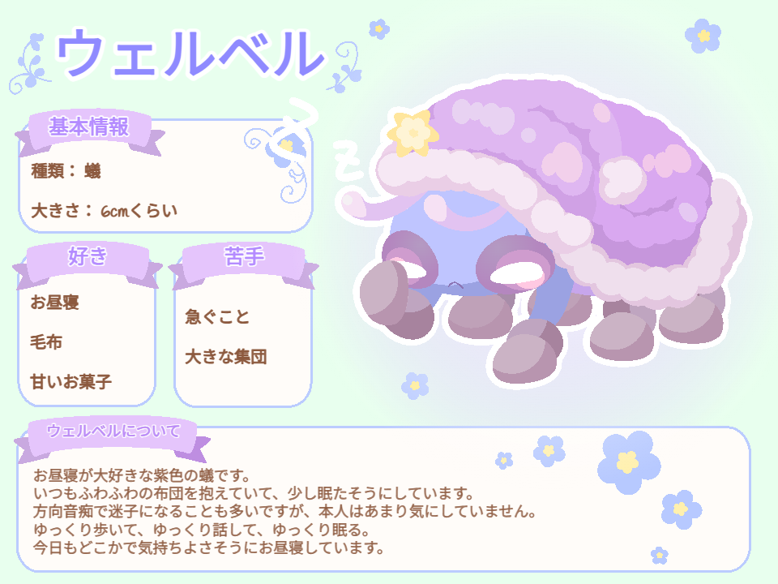
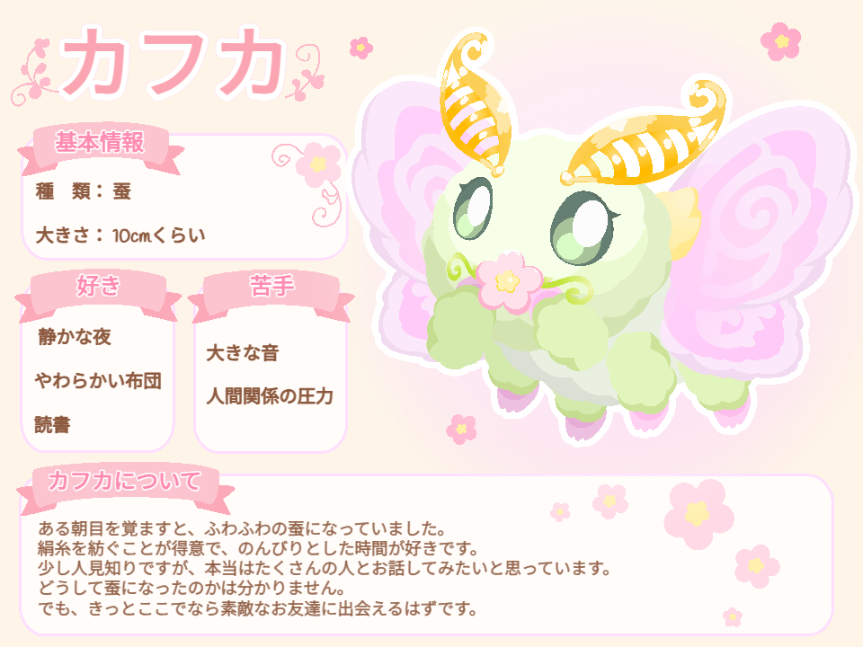
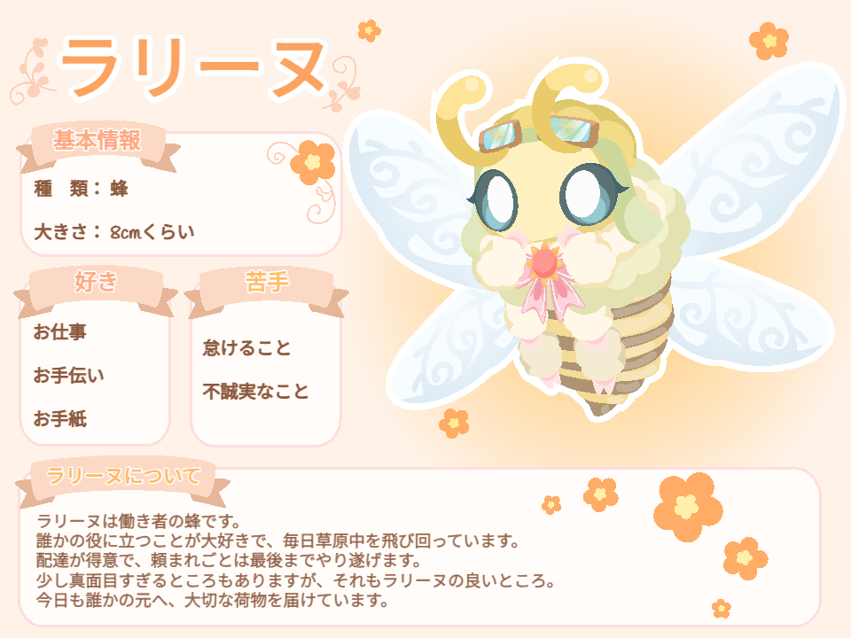
「草原のおともだち」としてまとめた
4人のキャラクター作品です。
イアン、ウェルベル、カフカ、ラリーヌを
一つのシリーズとしてまとめながら、
それぞれの色やデザインには違いを持たせています。
複数のキャラクターを同じ画面で紹介することで、
一人ずつを見るだけではなく、
「4人で一つの作品」という見せ方ができるようにしました。
共通した要素を残しながら個性を分けることで、
シリーズとしての統一感とキャラクターごとの違いを
両立させています。
制作目的
キャラクター紹介・世界観制作
使用ツール
Scratch内蔵ベクターエディター
背景・コンセプトイラスト
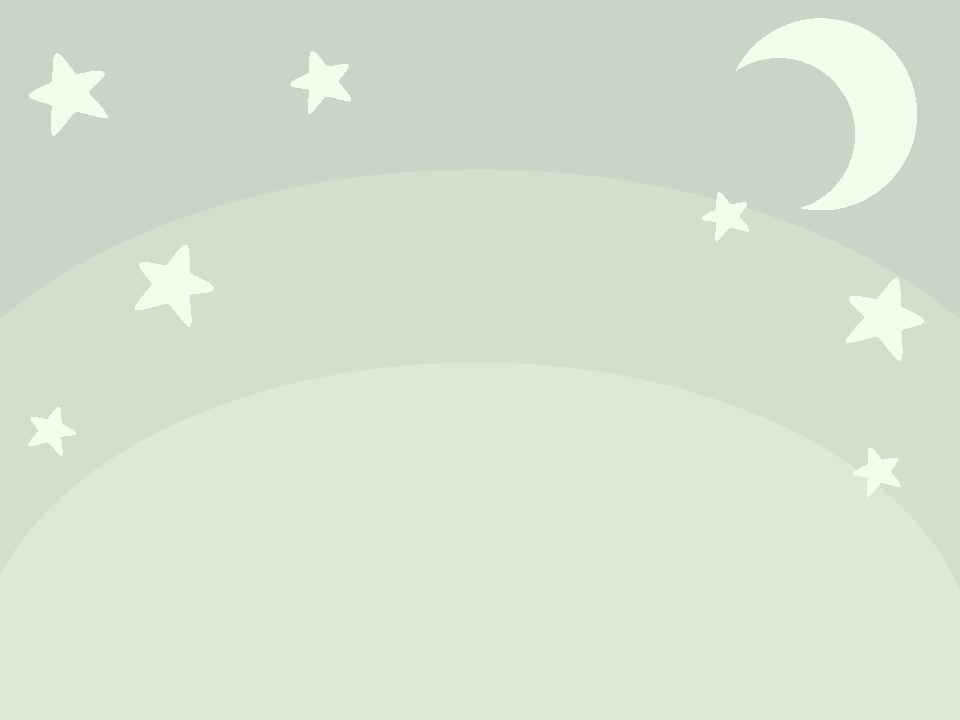
.png)
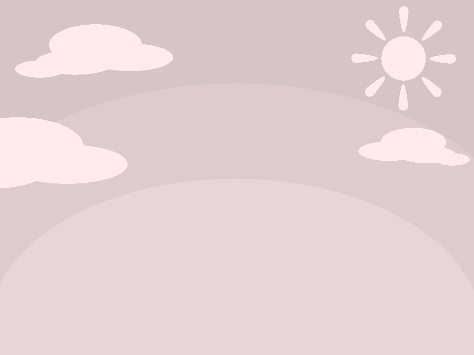
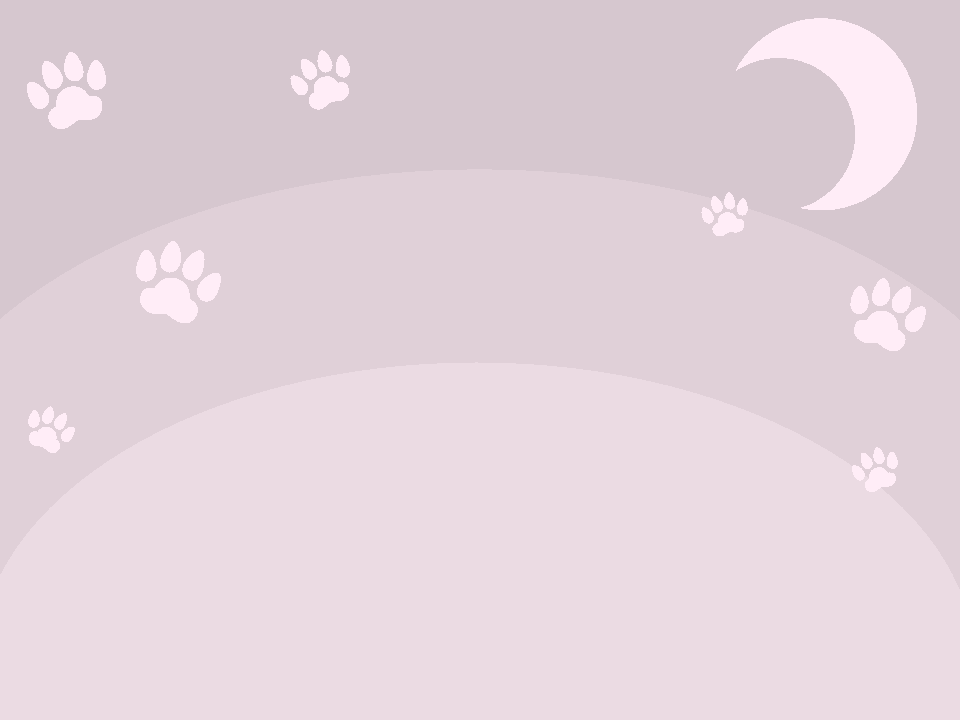
ゲームや創作で使用することを想定して制作した
背景・コンセプトイラストです。
月、星、雲、太陽、足跡などのモチーフを使い、
大きな形と余白を残した構成にしています。
背景はキャラクターや文字が上に重なることも多いため、
細かな情報を詰め込みすぎず、
画面全体の雰囲気を作れることを意識しました。
一つの構成をもとに複数のパターンを作ることで、
色やモチーフを変えながら
同じ世界観の中で使い分けられるようにしています。
制作目的
ゲーム・創作向け背景制作
使用ツール
Scratch内蔵ベクターエディター
世界観素材
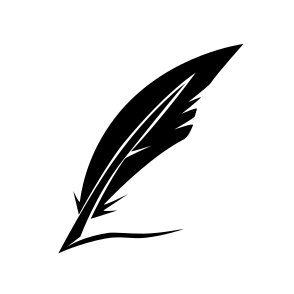
創作の世界観を構成するために制作した
グラフィック素材です。
羽ペンのような単体のモチーフを制作し、
キャラクターや背景とは別に、
Webサイトや作品内の装飾として使用できるようにしています。
素材単体でも成立しながら、
他のグラフィックと組み合わせたときにも
世界観を邪魔しないことを意識して制作しました。
制作目的
創作・Webサイト用グラフィック素材
使用ツール
Scratch内蔵ベクターエディター
キャラクターシート
ラリアフルス

キャラクター「ラリアフルス」の設定を
一枚にまとめたキャラクターシートです。
イラストだけでなく、
名前・出身・在住・職業・性格などの情報を同じ画面へ配置し、
キャラクターの基本設定を一枚で確認できるようにしています。
月や夜をイメージした背景と青系の色を使用し、
キャラクターそのものだけでなく、
設定からも雰囲気が伝わるデザインにしました。
情報量が多くなることを考え、
イラストと文字がそれぞれ見やすくなるよう
配置と余白を調整しています。
制作目的
キャラクター設定・情報整理
使用ツール
Scratch内蔵ベクターエディター
イエロー
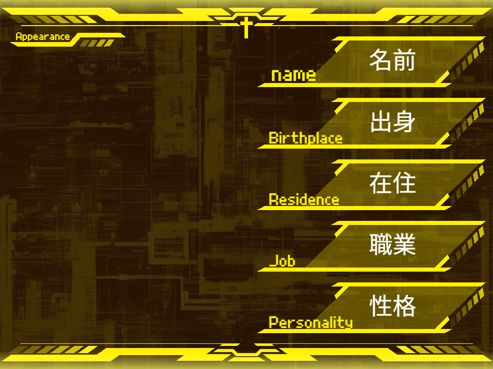
キャラクター「イエロー」の設定をまとめた
キャラクターシートです。
キャラクターのイラストと設定情報を一つの画面にまとめ、
絵を見るだけでなく、
情報からもキャラクターを理解できる構成にしました。
黄色を中心とした配色を使用し、
キャラクター名に合わせて
シート全体の色の印象を統一しています。
他のキャラクターシートと基本的なレイアウトを揃えることで、
複数のキャラクターを並べたときにも
一つのシリーズとして見えるようにしています。
制作目的
キャラクター設定・情報整理
使用ツール
Scratch内蔵ベクターエディター
グリーン
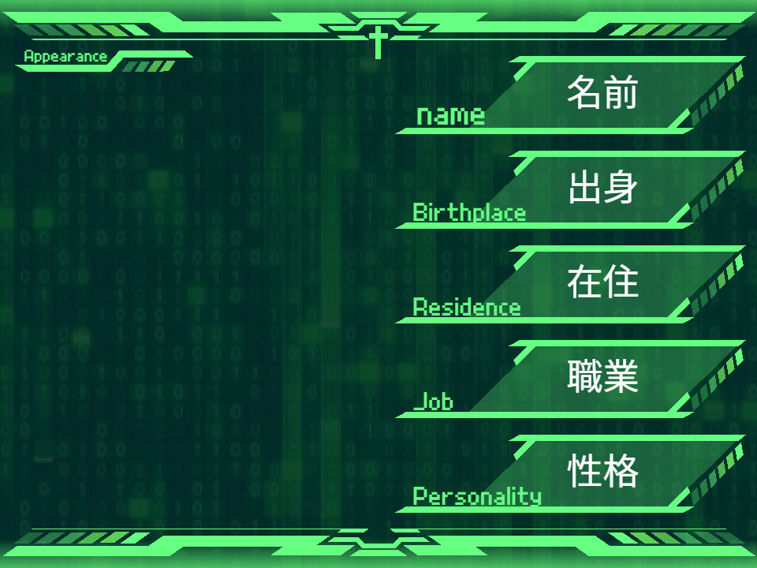
キャラクター「グリーン」の設定をまとめた
キャラクターシートです。
緑を基調とした配色に、
デジタル画面を思わせる背景を組み合わせ、
キャラクターに合わせた雰囲気を作っています。
シリーズとしてのレイアウトは他のシートと共通させながら、
色や背景を変更することで
キャラクターごとの違いを出しました。
共通する部分と変える部分を分けることで、
シリーズ全体の統一感を保ちながら
個々のキャラクターにも個性を持たせています。
制作目的
キャラクター設定・情報整理
使用ツール
Scratch内蔵ベクターエディター
ブルー
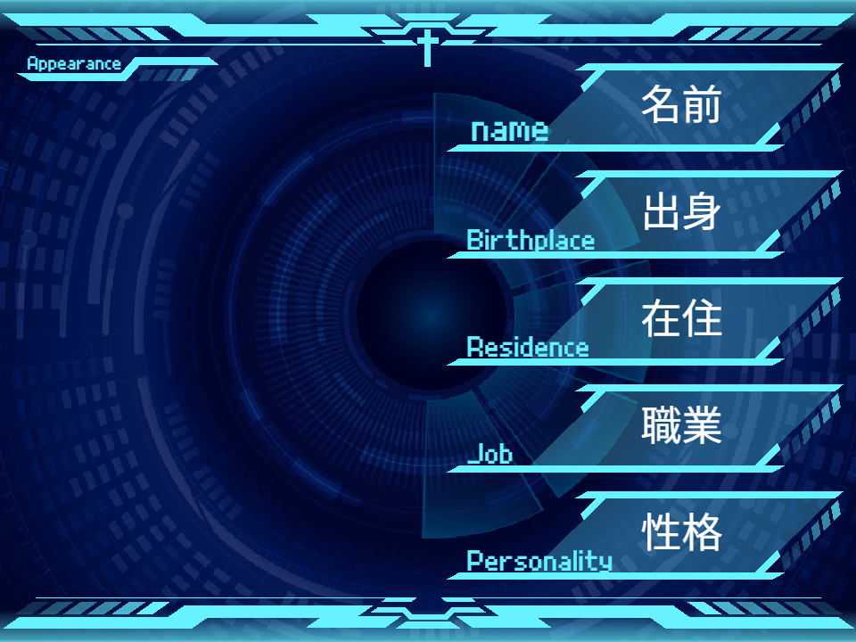
キャラクター「ブルー」の設定をまとめた
キャラクターシートです。
青と水色を中心とした配色に、
円形のデジタルグラフィックを組み合わせ、
情報端末を思わせるデザインにしています。
キャラクターを表示するスペースと設定情報の両方を確保し、
一枚の画面の中で情報が整理されて見えるように構成しました。
装飾を増やすだけではなく、
情報を読むことも考えながら
デザインと情報量のバランスを調整しています。
制作目的
キャラクター設定・情報整理
使用ツール
Scratch内蔵ベクターエディター
レッド
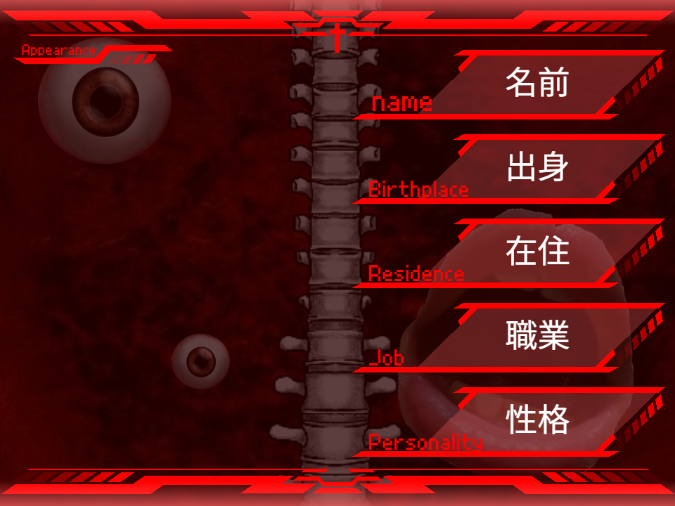
キャラクター「レッド」の設定をまとめた
キャラクターシートです。
赤と黒を基調とした配色に、
目や背骨を思わせるモチーフを背景へ取り入れ、
他のシートとは異なる印象を作りました。
一方で、基本的な情報配置はシリーズ内で共通させ、
レイアウトの統一感は維持しています。
同じ形式の中でも、
色や背景、装飾を変えることで、
キャラクターごとの雰囲気を表現できることを意識した作品です。
制作目的
キャラクター設定・情報整理
使用ツール
Scratch内蔵ベクターエディター